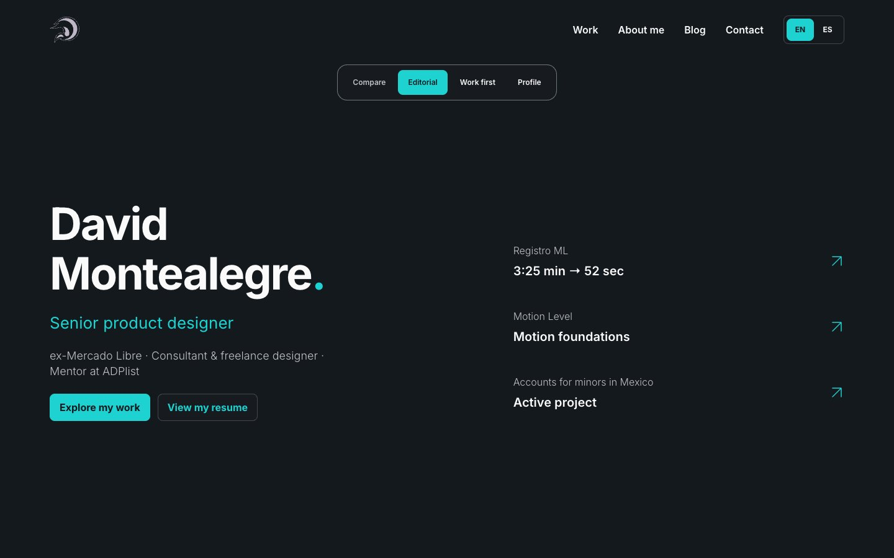
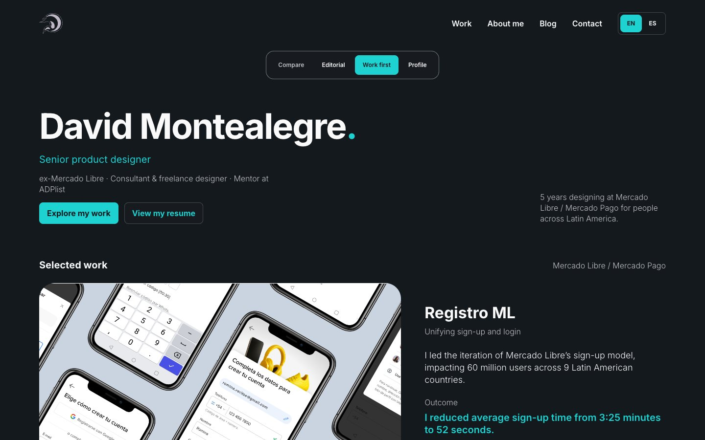
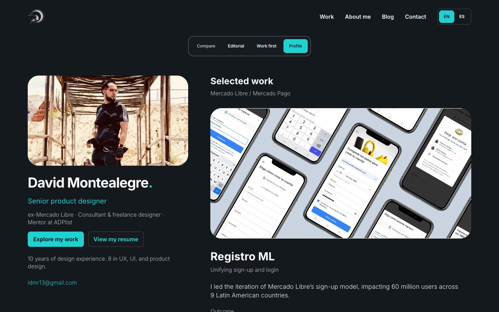

 EditorialUna introducción amplia y un índice de resultados. Los casos se desarrollan como una historia visual.Explorar editorial
 Proyectos primeroUna presentación breve da paso al trabajo. Registro ML abre la galería, seguido por Motion Level y Cuentas para menores en México.Explorar proyectos
 Perfil y trabajoTu presentación permanece junto a los casos en escritorio. En móvil, el perfil abre una lectura continua.Explorar perfil